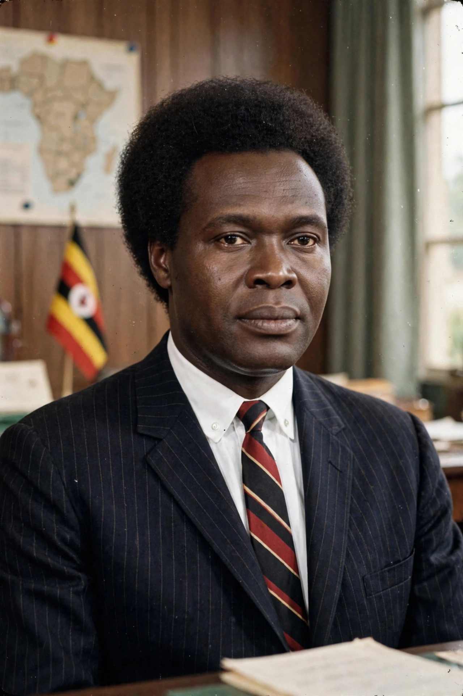

Apollo Milton Opeto Obote (28 December 1925 – 10 October 2005) was a Ugandan politician who led Uganda to independence from Britain in 1962 and served as prime minister (1962–1966) and president (1966–1971, 1980–1985). His second presidency was marked by civil war against Yoweri Museveni's insurgency and extensive human rights abuses; he was overthrown twice, both times by military coups.

| Born | 28 December 1925, Akokoro, Uganda Protectorate |
|---|---|
| Died | 10 October 2005 (aged 79), Johannesburg, South Africa |
| Party | Uganda People's Congress |
| Office | President of Uganda 1966–71, 1980–85 |
Obote, a Langi from northern Uganda, worked in Kenya where he joined independence politics, then co-founded the Uganda People's Congress in 1960. As prime minister at independence he governed in alliance with the Buganda kingdom's party, but in 1966 he abrogated the constitution, exiled Kabaka Mutesa II and declared a republic, issuing the socialist "Common Man's Charter" (1969) and nationalising assets in the Move to the Left.
While abroad in January 1971, Obote was deposed by his army commander Idi Amin. From exile in Tanzania he backed the 1979 war that toppled Amin, then won the disputed 1980 elections, returning as president. His government fought the Ugandan Bush War against Museveni's National Resistance Army; the army's counterinsurgency in the Luwero Triangle killed tens of thousands.
Deposed by his own generals in July 1985, Obote lived in exile in Zambia and never returned to Uganda. He died in Johannesburg in 2005 and was given a state funeral in Uganda.